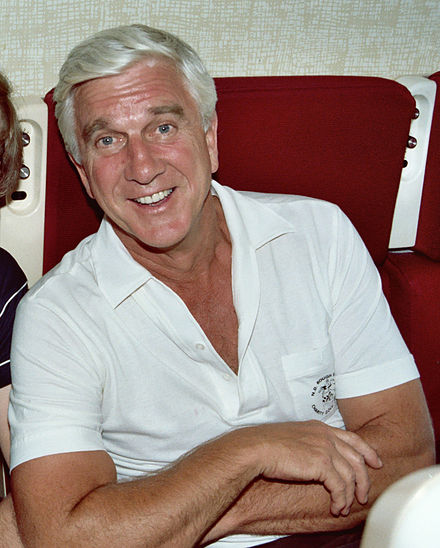

Leslie Nielsen

Leslie Nielsen smiles
Leslie William Nielsen OC (11 February 1926 – 28 November 2010) was a Canadian actor, comedian, and producer. He appeared in more than 100 films and 150 television programs, portraying more than 220 characters.
To learn more about this man, follow this link.